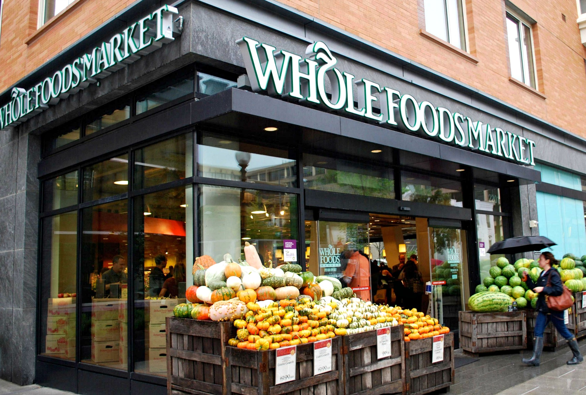
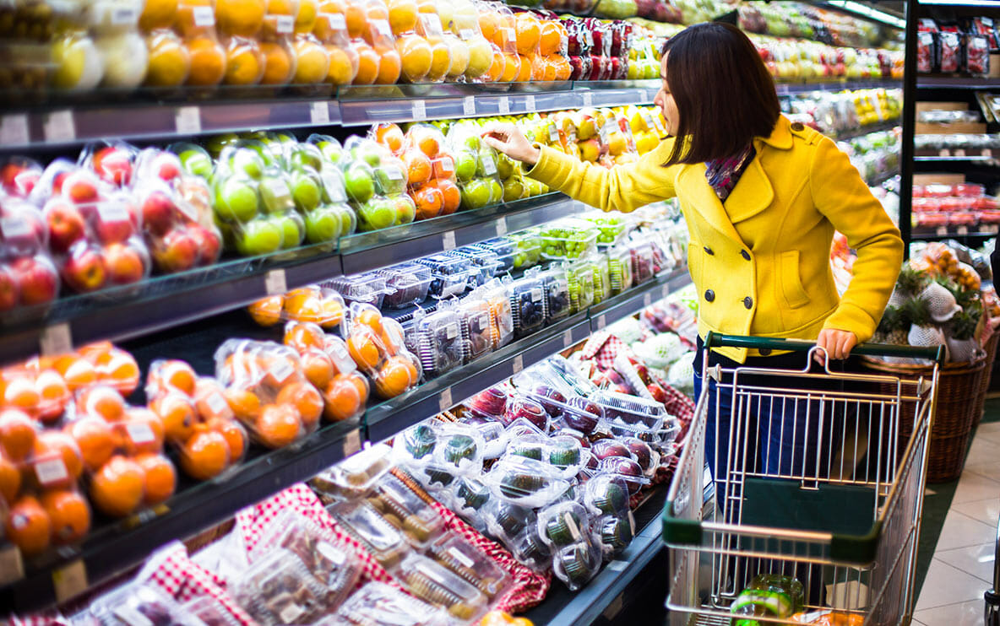
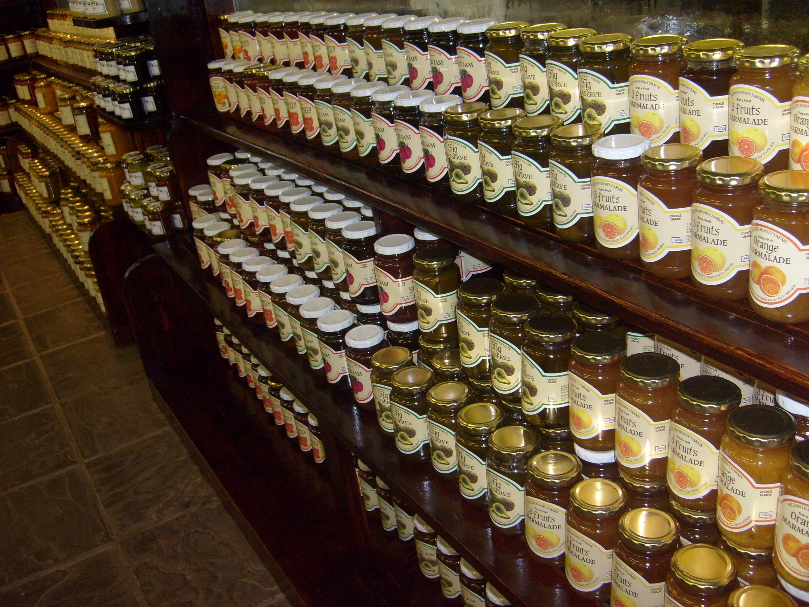
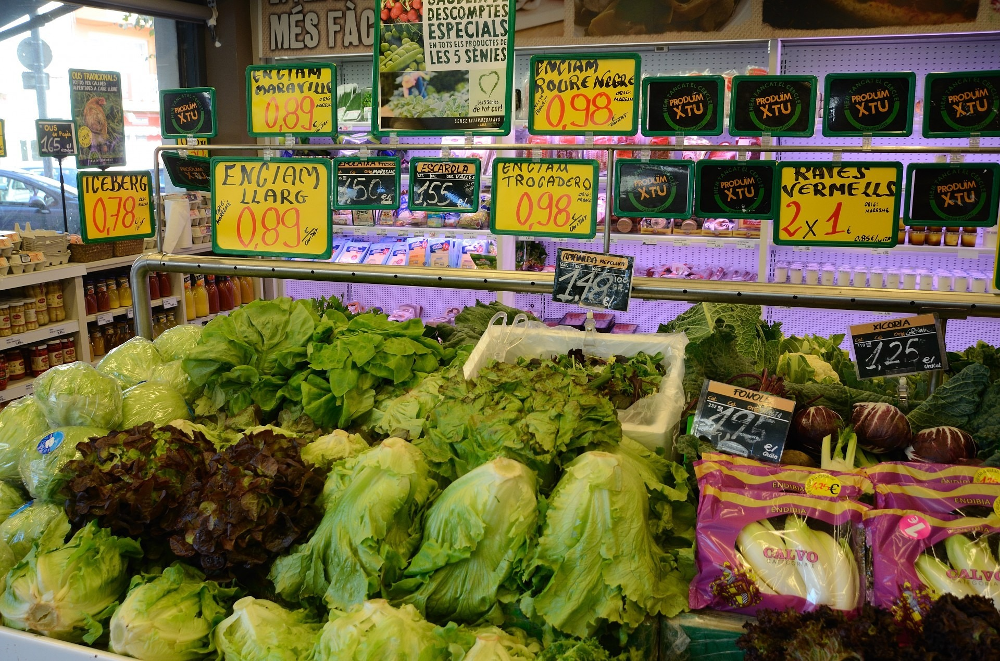

Discover the crisp texture and sweet taste of our freshly picked apples. Each apple is a selection from eco-friendly orchards committed to sustainable practices. Perfect for a variety of uses from baking apple pies to enhancing salads, or enjoying on their own for a refreshing, nutritious snack. Their bright color and fresh taste are a delightful treat.
Experience the true essence of nature with our organic vegetables. Grown without the use of any artificial chemicals, these vegetables boast rich nutrients and full-bodied flavors, making them an ideal choice for health-conscious meals. Use them in your favorite stews or enjoy them steamed for a natural taste that brings out their best qualities.

Our bakery delights are a symphony of flavors, featuring everything from buttery croissants to decadent eclairs. Each piece is baked daily with a focus on quality ingredients and traditional methods. Whether you're looking for a luxurious treat for afternoon tea or a delightful morning start, our pastries are designed to please.

Embrace the rich, creamy flavor of our premium dairy products. Our range features freshly churned butter, a variety of soft cheeses, and milk that’s as fresh as it gets. These products reflect our commitment to high-quality dairy production. Add a touch of gourmet to your recipes with our exceptional dairy range.
Savor the zest and juice of our sun-ripened oranges, picked at peak ripeness from lush groves. Rich in vitamins and bursting with natural sweetness, our oranges are perfect for a healthy snack, a vibrant juice, or as a bright addition to salads, offering a splash of citrus to any dish.
Indulge in the superior quality of our premium meats, sourced from the finest farms known for their ethical and sustainable practices. Each cut, from our juicy steaks to our tender chicken, is hand-selected for its exceptional texture and flavor. Ideal for a luxurious meal, our meats promise outstanding taste and quality.
Dive into the freshness of the sea with our selection of seafood. Sourced daily from sustainable environments, our seafood assortment includes everything from tender scallops to rich, luxurious lobster. Each item is guaranteed to bring the finest ocean flavors straight to your plate.

Add a dash of excitement to your meals with our exclusive, hand-picked spices. Our collection features a variety of spices from around the world, perfect for enhancing the flavor of any dish. From the heat of chili to the sweetness of cinnamon, our spices are a must-have for any kitchen.

Empower your wellness journey with our health-focused snacks, including granola bars packed with wholesome nuts, fruits, and grains. These bars are not just a source of energy but also a delicious way to satisfy your hunger while supporting a healthy lifestyle. Ideal for on-the-go nourishment or a post-workout boost.
Elevate your cooking with our exquisite array of spices, carefully selected from the best global sources. Whether you need the fiery zest of chili or the sweet warmth of cinnamon, our spices are key for creating depth and excitement in any culinary creation. They’re essential for any kitchen looking to enhance flavor profiles.